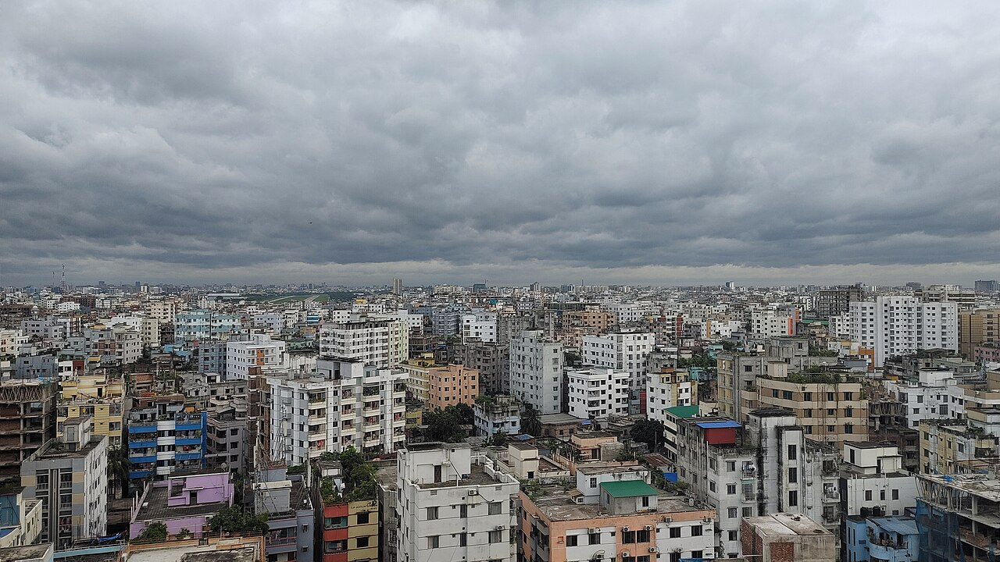

Гуанчжоу
Гуанчжоу — крупный торговый центр на юге Китая. В дельте Жемчужной реки его застройка соединяется с соседними городами и Шэньчжэнем. Население всей городской территории в рейтинге — 69 562 000 человек.
 Подробнее»
Подробнее»
Токио
Токио находится на острове Хонсю у Токийского залива. Столичные кварталы связаны железными дорогами с Йокогамой и другими соседними городами. В общей застроенной территории живут 37 325 000 человек.
Подробнее»Шанхай
Шанхай — крупный порт и финансовый центр в дельте Янцзы. Вместе с Чанчжоу и соседними городами он образует единую застроенную территорию, связанную дорогами и промышленностью. Её население — 45 115 000 человек.
Подробнее»Джакарта
Джакарта расположена на северо-западе острова Ява. Деловые кварталы и жилые районы города постепенно сливаются с соседними поселениями. Население всей городской территории в рейтинге — 36 877 000 человек.
Подробнее»Дели
Дели расположен на реке Ямуне на севере Индии. Старые кварталы соседствуют с правительственными зданиями Нью-Дели. Население территории — 33 224 000 человек.
Подробнее»
Мумбаи
Мумбаи — порт и финансовый центр на берегу Аравийского моря. Город известен набережной Марин-драйв и индийской киноиндустрией. Население территории — 26 237 000 человек.
Подробнее»
Манила
Манила расположена на острове Лусон у Манильского залива. Регион объединяет портовые районы и деловые центры соседних городов. Население — 25 521 000 человек.
Подробнее»
Дакка
Дакка — столица Бангладеш на реке Буриганга. Исторические кварталы соседствуют с рынками, предприятиями и новыми районами. Население территории — 25 305 000 человек.
Подробнее»